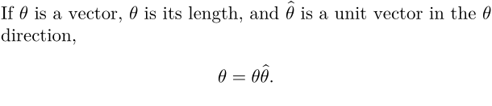

Palatino, designed by Hermann Zapf, is an elegant font. To typeset a document in Palatino:
\usetypescript[palatino][ec] \setupbodyfont[palatino,11pt]
(I use 11pt because I find 12pt slightly too large, but choose your favorite size.)
That setup uses Palatino for text and mathematics. To set the mathematics in Euler (also designed by Hermann Zapf),
\usetypescript[palatino][ec] \definetypeface [palatino] [mm] [math] [euler] [euler] [rscale=1.03] \setupbodyfont[palatino,11pt]
(The rscale setting is to match the Euler font height to the Palatino height.)
To get boldface mathematics symbols, add one line to the preceding setup:
\usetypescript[palatino][ec] \definetypeface [palatino] [mm] [math] [euler] [euler][rscale=1.03] \definetypeface [boldmath] [mm] [boldmath][euler][euler][rscale=1.03] \setupbodyfont[palatino,11pt]
Then use \boldsymbol.
Here is an example:
\usetypescript[palatino][ec] \definetypeface [palatino] [mm] [math] [euler] [euler][rscale=1.03] \definetypeface [boldmath] [mm] [boldmath][euler][euler][rscale=1.03] \setupbodyfont[palatino,11pt] \def\thetavec{{\boldsymbol\theta}} \def\thetahat{\hat\thetavec} If $\thetavec$ is a vector, $\theta$ is its length, and $\thetahat$ is a unit vector in the $\thetavec$ direction, \startformula \thetavec = \theta\thetahat. \stopformula
which produces
- 
Mk IV
The above won't work in Mk IV. For hints on how to get Euler working there, read the thread at http://www.ntg.nl/pipermail/ntg-context/2010/052632.html
TL;DR: It should be enough to use pagella-euler typescript.